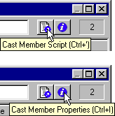
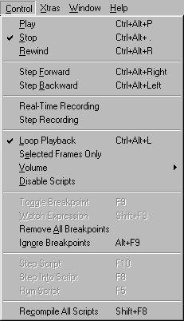

Using Director > Getting Started > Resources for learning Director
Using Director > Getting Started > Resources for learning Director |
Resources for learning Director
The Director package contains a variety of media to help you learn the program quickly and become proficient in creating multimedia—including online help, a multimedia Guided Tour, a tutorial, integrated tooltips, printed books, and a regularly updated Web site.
Director includes the following main instructional components.
Director Help and the Guided Tour
Director Help is the comprehensive information source for all Director features. The help includes complete conceptual overviews of all features, animated examples, descriptions of all interface elements, and a reference of all Lingo commands and elements. They are extensively cross-referenced and indexed to make finding information and jumping to related topics quick and easy.
The best place to start learning Director is the Guided Tour included with Director Help. The Guided Tour provides a quick conceptual overview of how to use key features to create and distribute a movie.
Click the Help button in any dialog box to open the relevant help topic.
When you're ready to actually start working in Director, proceed to the Director Tutorial. The tutorial shows you how to create a basic movie with some of Director's most useful and powerful features. The tutorial appears in Director Help and in Chapter 1 of Using Director.
Using Director is a printed excerpt of Director Help. It includes all the main topics in Director Help, but omits some topics that are less frequently used or becoming obsolete as Director evolves.
The Lingo Dictionary is a printed version of all the Lingo topics in Director Help.
When you place the pointer over a Director tool for a few seconds, a small tooltip appears that explains the function of the tool. When a keyboard shortcut is available, it is included in the tooltip.
In the following illustrations, Director is displaying tooltips for two different tools in the Cast window.

Many commands that are available from Director menus are also accessible through the use of keyboard shortcuts. When you display a menu or submenu, the appropriate key combinations are shown next to the commands for which keyboard shortcuts are available.
The following illustration shows key board shortcuts for a variety of commands on the Control menu. (The illustration shows Director running on Windows. When Director is running on a Macintosh, the keyboard shortcuts reflect Macintosh keys.)
